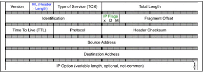
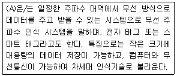
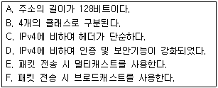

네트워크관리사-2급 (2018-07-15 기출문제)
1과목: TCP/IP
1. TCP(Transmission Control Protocol)에 대한 설명으로 옳지 않은 것은?
- 연결지향(Connection Oriented)이다.
- 수신측은 수신된 데이터의 에러를 검사하여 에러가 있으면 자동으로 수정한다.
- 송신측은 데이터를 패킷으로 나누어 일련번호, 수신측 주소, 에러검출코드를 추가한다.
- 네트워크에서 송신측과 수신측간에 신뢰성 있는 전송을 확인한다.
(정답률: 88%)

2. 서브넷 마스크(Subnet Mask)에 대한 설명으로 옳지 않은 것은?
- A, B, C Class 대역의 IP Address는 모두 같은 서브넷 마스크를 사용한다.
- 하나의 네트워크 클래스를 여러 개의 네트워크로 분리하여 IP Address를 효율적으로 사용할 수 있다.
- 서브넷 마스크는 목적지 호스트의 IP Address가 동일 네트워크상에 있는지 확인한다.
- 서브넷 마스크를 이용하면, Traffic 관리 및 제어가 가능하다.
(정답률: 88%)
3. C Class인 IP Address는?
- 191.234.56.34
- 125.76.133.234
- 131.15.45.120
- 192.168.17.34
(정답률: 90%)
4. C Class의 네트워크에서 호스트 수가 12개 일 때 분할할 수 있는 최대 서브넷 수는?
- 2
- 4
- 8
- 16
(정답률: 72%)
5. IP 헤더 필드들 중 처리량, 전달 지연, 신뢰성, 우선순위 등을 지정해 주는 것은?

- IHL(IP Header Length)
- TOS(Type of Service)
- TTL(Time To Live)
- Header Checksum
(정답률: 73%)
6. 인터넷의 잘 알려진 포트(Well-Known Port) 번호로 옳지 않은 것은?
- SSH – 22번
- FTP - 21번
- Telnet – 24번
- SMTP - 25번
(정답률: 86%)
7. ARP에 관한 설명으로 올바른 것은?
- IP Address를 장치의 하드웨어 주소로 매핑하는 기능을 제공한다.
- Dynamic으로 설정된 내용을 Static 상태로 변경하는 ARP 명령어 옵션은 '-d'이다.
- ARP가 IP Address를 알기 위해 특정 호스트에게 메시지를 전송하고 이에 대한 응답을 기다린다.
- ARP Cache는 IP Address를 도메인(Domain) 주소로 매핑한 모든 정보를 유지하고 있다.
(정답률: 80%)
8. TCP/IP 프로토콜 중에서 IP 계층의 한 부분으로 에러 메시지와 같은 상태 정보를 알려주는 프로토콜은?
- ICMP(Internet Control Message Protocol)
- ARP(Address Resolution Protocol)
- RARP(Reverse Address Resolution Protocol)
- UDP(User Datagram Protocol)
(정답률: 93%)
9. DNS 서버에 질의를 보내 IP Address와 도메인 주소의 결과를 알려주는데 사용될 수 있는 유틸리티는?
- Netstat
- Nbtstat
- Nslookup
- Hostname
(정답률: 84%)
10. TCP/IP에서 데이터 링크층의 데이터 단위는?
- 메시지
- 세그먼트
- 데이터그램
- 프레임
(정답률: 88%)
11. OSI 7 Layer에 따라 프로토콜을 분류하였을 때, 다음 보기들 중 같은 계층에서 동작하지 않는 것은?
- SMTP
- RARP
- ICMP
- IGMP
(정답률: 74%)
12. UDP 헤더에 포함이 되지 않는 항목은?
- 확인 응답 번호(Acknowledgment Number)
- 소스 포트(Source Port) 주소
- 체크섬(Checksum) 필드
- 목적지 포트(Destination Port) 주소
(정답률: 84%)
13. SSH에 대한 설명으로 올바른 것은?
- 데이터 전송 시 UDP 프로토콜만을 사용한다.
- 패스워드가 암호화되지 않으므로 패스워드가 보호되지 않는다.
- Secure Shell 이라고 부른다.
- 쌍방 간 인증을 위해 Skipjack 알고리즘이 이용된다.
(정답률: 73%)
14. TFTP 프로토콜에 대한 설명 중 옳지 않은 것은?
- Trivial File Transfer Protocol의 약어이다.
- 네트워크를 통한 파일 전송 서비스이다.
- 3방향 핸드셰이킹 방법인 TCP 세션을 통해 전송한다.
- 신속한 파일의 전송을 원할 경우에는 FTP보다 훨씬 큰 효과를 얻을 수 있다.
(정답률: 89%)
15. IPv6 헤더 형식에서 네트워크 내에서 혼잡 상황이 발생되어 데이터그램을 버려야 하는 경우 참조되는 필드는?
- Version
- Priority
- Next Header
- Hop Limit
(정답률: 81%)
16. SNMP에 대한 설명 중 옳지 않은 것은?
- UDP 상에서 작동한다.
- 비동기식 요청/응답 메시지 프로토콜이다.
- 4가지 기능(Get, Get Next, Set, Trap)을 수행한다.
- E-Mail을 주고받기 위해 사용되는 프로토콜이다.
(정답률: 86%)
17. IGMP 프로토콜의 주된 기능은?
- 네트워크 내에 발생된 오류에 관한 보고 기능
- 대용량 파일을 전송하는 기능
- 멀티 캐스트 그룹에 가입한 네트워크 내의 호스트 관리 기능
- 호스트의 IP Address에 해당하는 호스트의 물리주소를 알려주는 기능
(정답률: 87%)
2과목: 네트워크 일반
18. 프로토콜의 기본적인 기능 중, 정보의 신뢰성을 부여하는 것으로, 데이터를 전송한 개체가 보낸 PDU(Protocol Data Unit)에 대한 애크널러지먼트(ACK)를 특정시간 동안 받지 못하면 재전송하는 기능은?
- Flow Control
- Error Control
- Sequence Control
- Connection Control
(정답률: 76%)
19. 패킷 교환망의 특징으로 옳지 않은 것은?
- 연결설정에 따라 가상회선과 데이터그램으로 분류된다.
- 메시지를 보다 짧은 길이의 패킷으로 나누어 전송한다.
- 망에 유입되는 데이터의 양이 많아질수록 전송속도가 빠르다.
- 블록킹 현상이 없다.
(정답률: 88%)
20. OSI 7 Layer 중 논리링크제어(LLC) 및 매체 액세스 제어(MAC)를 사용하는 계층은?
- 물리 계층
- 데이터링크 계층
- 네트워크 계층
- 응용 계층
(정답률: 76%)
21. 네트워크 계층(Network Layer)에 대한 설명으로 옳지 않은 것은?
- 호스트들의 주소 체계를 설정한다.
- 경로 선택 및 라우팅 기능을 수행한다.
- 데이터의 흐름을 제어한다.
- 네트워크 계층에서 전달하는 데이터는 패킷이라 불린다.
(정답률: 75%)
22. IEEE 802 프토토콜의 연결이 옳은 것은?
- IEEE 802.11 : Wireless LAN
- IEEE 802.6 : IS LAN
- IEEE 802.4 : Cable TV
- IEEE 802.5 : CSMA/CD
(정답률: 84%)
23. 소프트웨어 정의 네트워크(SDN:Software Defined Networking)에 대한 설명으로 옳지 않은 것은?
- 정체를 일으키는 복잡한 구조 기술
- 가상화 기술의 발달에 대응하기 위한 기술
- 트래픽 패턴의 변화에 따른 대응 기술
- 네트워크 관리의 문제를 해결하기 위한 기술
(정답률: 79%)
24. 다음 (A) 안에 들어가는 용어 중 옳은 것은?

- Bar Code
- Bluetooth
- RFID
- WiFi
(정답률: 83%)
25. 아래 내용에서 IPv6의 일반적인 특징만을 나열한 것은?

- A, B, C, D
- A, C, D, E
- B, C, D, E
- B, D, E, F
(정답률: 91%)
26. LAN의 구성형태 중 중앙의 제어점으로부터 모든 기기가 점 대 점(Point to Point) 방식으로 연결된 구성형태는?
- 링형 구성
- 스타형 구성
- 버스형 구성
- 트리형 구성
(정답률: 90%)
27. 두 스테이션 간 하나의 회선(전송로)을 분할하여 개별적으로 독립된 신호를 동시에 송/수신 할 수 있는 다수의 통신 채널을 구성하는 기술은?
- 데이터 전송(Data Transmission)
- 디지털 데이터 통신(Digital Data Communication)
- 데이터 링크 제어(Data Link Control)
- 다중화(Multiplexing)
(정답률: 89%)
3과목: NOS
28. Linux의 각 디렉터리에 대한 설명으로 옳지 않은 것은?(오류 신고가 접수된 문제입니다. 반드시 정답과 해설을 확인하시기 바랍니다.)
- /bin : 추가된 응용 프로그램 패키지가 설치되는 디렉터리이다.
- /lib : 각종 라이브러리가 저장된 디렉터리로 커널 모듈도 이곳에 설치된다.
- /usr : 시스템이 정상적으로 동작하는데 필요한 모든 명령과 라이브러리 및 매뉴얼 페이지가 저장된다.
- /root : 루트 사용자의 홈 디렉터리로 루트 사용자만 접근가능하다.
(정답률: 61%)
29. 자신의 IP 정보를 확인 했더니 IP는 '203.254.101.100'이고, 서브넷 마스크는 '255.255.255.0' 이었다. 이 IP의 특징에 대한 설명으로 올바른 것은?
- 공인(Public) IP Address이다.
- B Class에 속하는 IP Address이다.
- 약 65,500개의 내부 PC사용이 가능하다.
- 멀티캐스트(Multicast) 용도로 사용되는 IP Address로, 일반 용도로 사용되는 PC에서 할당된 경우라면 잘못 할당된 경우이다.
(정답률: 69%)
30. Windows Server 2008 R2에서 파일 및 프린터 서버를 사용할 수 있도록 지원하기 위해서 반드시 설치해야 하는 통신 프로토콜은?
- TCP/IP
- SNMP
- SMTP
- IGMP
(정답률: 80%)
31. DNS에서 지원하는 레코드 형식 중 역방향조회에 사용되는 레코드는?
- A
- AAAA
- PTR
- SOA
(정답률: 83%)
32. Windows Server 2008 R2의 Active Directory에서 두 개 이상의 트리(Tree)가 연결되어 구성되는 구조를 무엇이라고 하는가?
- 도메인(Domain)
- 트리(Tree)
- 포레스트(Forest)
- 사이트(Site)
(정답률: 83%)
33. Windows Server 2008 R2에서 지원하는 Hyper-V에 대한 설명으로 옳지 않는 것은?
- 하드웨어 사용률을 높여준다.
- 서버 가용성이 줄어든다.
- 유지비용을 줄일 수 있다.
- 개발 및 테스트의 효율성을 향상시킨다.
(정답률: 79%)
34. Linux에서 사용되는 스왑 영역(Swap Space)에 관한 설명으로 올바른 것은?
- 스왑 영역이란 시스템에서 사용 가능한 메모리양을 늘리기 위해 디스크 장치를 이용하는 것을 의미한다.
- 스왑 영역은 가상 메모리 형태로 이용되며 실제 물리적 메모리와 같은 처리속도를 갖는다.
- 시스템이 부팅될 때 부팅 가능한 커널 이미지 파일을 담는 영역으로 10Mbyte 정도면 적당하다.
- Linux에 필요한 바이너리 파일과 라이브러리 파일들이 저장되는 영역으로 많은 용량을 요구한다.
(정답률: 74%)
35. Linux에서 'ifconfig'를 사용하여 네트워크 인터페이스 카드를 동작시키려고 한다. 명령어에 대한 사용이 올바른 것은?
- ifconfig 192.168.2.4 down
- ifconfig eth0 192.168.2.4 up
- ifconfig -up eth0 192.168.2.4
- ifconfig up eth0 192.168.2.4
(정답률: 69%)
36. Linux 시스템에서 디렉터리를 생성하는 명령어는?
- mkdir
- rmdir
- grep
- find
(정답률: 90%)
37. Linux에서 프로세스와 관련된 명령어에 대한 설명 중 옳지 않은 것은?
- kill - 프로세스를 종료시키는 명령어
- nice - 프로세스의 우선순위를 변경하는 명령어
- pstree - 프로세스를 트리형태로 보여주는 명령어
- top - 가장 우선순위가 높은 프로세스를 보여주는 명령어
(정답률: 81%)
38. Windows Server 2008 R2에서 제공하는 기능으로 허가되지 않은 접근을 보호하고, 폴더나 파일을 암호화하는 기능은?
- Distributed File System
- EFS(Encrypting File System)
- 디스크 할당량
- RAID
(정답률: 81%)
39. Windows Server 2008 R2에서 User계정으로 암호화 파일을 만들고 Administrator 계정으로 접근하였을 때, 다음 설명 중에서 올바른 것은?
- 암호화 파일 속성을 변경할 수 있다.
- 암호화 파일을 복사할 수 있다.
- 암호화 파일 내용을 볼 수 있다.
- 암호화 파일의 속성, 내용을 보고자 할 때 거부 메시지가 나타난다.
(정답률: 74%)
40. Linux 시스템에서 사용되고 있는 메모리양과 사용 가능한 메모리 양, 공유 메모리와 가상 메모리에 대한 정보를 볼 수 있는 명령어는?
- mem
- free
- du
- cat
(정답률: 78%)
41. Windows Server 2008 R2의 보안템플릿에 대한 설명으로 옳지 않은 것은?
- 보안 관련한 설정들을 미리 정의해 놓은 템플릿이다.
- 모든 그룹 정책에서 '가져오기' 하여 적용할 수 있다.
- 보안템플릿은 그룹정책의 컴퓨터구성에만 적용되고 사용자 구성에는 적용되지 않는다.
- 무선네트워크, 공개 키, 소프트웨어 제한, 그리고 IP 보안에 적용되는 정책과 같이 몇몇 보안 설정들도 보안템플릿에 포함된다.
(정답률: 48%)
42. Linux 시스템에서 특정 파일의 권한이 '-rwxr-x--x' 이다. 이 파일에 대한 설명 중 옳지 않은 것은?
- 소유자는 읽기 권한, 쓰기 권한, 실행 권한을 갖는다.
- 소유자와 같은 그룹을 제외한 다른 모든 사용자는 실행 권한만을 갖는다.
- 이 파일의 모드는 '751' 이다.
- 동일한 그룹에 속한 사용자는 실행 권한만을 갖는다.
(정답률: 77%)
43. Windows Server 2008 R2의 이벤트 뷰어에서 로그온, 파일, 관리자가 사용한 감사 이벤트 등을 포함해서 모든 감사된 이벤트를 보여주는 로그는?
- 응용 프로그램 로그
- 보안 로그
- 설치 로그
- 시스템 로그
(정답률: 74%)
44. Windows Server 2008 R2의 서버관리자의 역할 추가마법사를 이용하여 FTP 서버를 구축하고자 한다. 다음 중 어느 역할을 선택해서 설정해야 하는가?
- AD 도메인 서비스
- DNS 서버
- 웹 서버(IIS)
- 응용프로그램 서버
(정답률: 73%)
45. 다른 운영체제와 Linux가 공존하는 하나의 시스템에서 멀티 부팅을 지원할 때 사용되며, Linux 로더를 의미하는 것은?
- MBR
- RAS
- NetBEUI
- GRUB
(정답률: 82%)
4과목: 네트워크 운용기기
46. OSPF(Open Shortest Path Fast) 프로토콜에 대한 설명으로 옳지 않은 것은?
- OSPF는 AS의 네트워크를 각 Area로 나누고 Area들은 다시 Backbone으로 연결이 되어 있는 계층구조로 되어있다.
- Link-State 알고리즘을 사용하여 네트워크가 변경이 되더라도 컴버전스 시간이 짧고 라우팅 루프가 생기지 않는다.
- VLSM(Variable Length Subnet Mask) 구성이 가능하기 때문에 한정된 IP Address를 효과적으로 활용할 수 있다.
- 라우터 사이에 서로 인증(Authentication)하는 것이 가능하여 관리자의 허가 없이 라우터에 쉽게 접속하고 네트워크를 확장할 수 있다.
(정답률: 75%)
47. 아래 장치 중 OSI 7 Layer의 물리 계층에서만 사용되는 장비는?
- 브리지(Bridge)
- 리피터(Repeater)
- 게이트웨이(Gateway)
- 라우터(Router)
(정답률: 80%)
48. 내부에 코어(Core)와 이를 감싸는 굴절률이 다른 유리나 플라스틱으로 된 외부 클래딩(Cladding)으로 구성된 전송 매체는?
- 이중 나선(Twisted Pair)
- 동축 케이블(Coaxial Cable)
- 2선식 개방 선로(Two-Wire Open Lines)
- 광 케이블(Optical Cable)
(정답률: 89%)
49. RAID 시스템 중 한 드라이브에 기록되는 모든 데이터를 다른 드라이브에 복사해 놓는 방법으로 복구 능력을 제공하며, 'Mirroring'으로 불리는 것은?
- RAID 0
- RAID 1
- RAID 3
- RAID 4
(정답률: 85%)
50. 허브는 한 장비에서 전송된 데이터 프레임을 허브와 연결된 모든 장비에게 다 전송하는데 이를 무엇이라 하는가?
- Flooding
- Filtering
- Forwarding
- Listening
(정답률: 72%)